4 Package Tidyverse
Tidyverse es un conjunto de paquetes en R diseñados para ciencia de datos, el cual nos ayuda en todo el proceso de la importación, transformación, visualizar y modelación datos. Una de las principales ventajas es que tienen estos paquetes que comparten nombre y estructuras comunes, esto quiere decir que todos los nombres están en minúscula o que utilizan la barra baja para llamar a las funciones.
#install.packages('tidyverse')
library(tidyverse)## -- Attaching packages --------------------------------------- tidyverse 1.3.0 --## v ggplot2 3.3.3 v purrr 0.3.4
## v tibble 3.0.6 v dplyr 1.0.4
## v tidyr 1.1.2 v stringr 1.4.0
## v readr 1.4.0 v forcats 0.5.1## -- Conflicts ------------------------------------------ tidyverse_conflicts() --
## x dplyr::filter() masks stats::filter()
## x dplyr::lag() masks stats::lag()Algunas librerías que contiene disponible tidyverse son los siguientes:
- readr
- dplyr
- tidyr
- tibble
- stringr
- forcats
- ggplot2
4.1 library readr para importar datos
El objetivo de readr es proporcionar una forma rápida y sencilla de leer datos con formato csv, tsv y fwf . Está diseñado para analizar de manera flexible muchos tipos de datos.
library(readr)4.1.1 Leer datos tabulares
readr admite siete formatos de archivo con las siguientes funciones:
| CODIGO | DESCRIPCIÓN |
|---|---|
read_csv("file.cvs") |
archivos separados por comas (CSV) |
read_cvs2("file.cvs") |
archivos delimitados por punto comas |
read_tsv("file.cvs") |
archivos separados por tabulaciones |
read_delim("file.cvs") |
archivos delimitados generales |
read_fwf("file.cvs") |
archivos de ancho fijo |
read_table("file.cvs") |
archivos tabulares donde las columnas están separadas por espacios en blanco |
read_log("file.cvs") |
archivos de registro web |
4.1.1.1 función para importar csv read_csv()
para llamar a read_csv tendrá el siguiente aspecto.
datos <- read_csv("data/datos_importates.csv")read_csv() abrirá un archivo CSV y lo leerá línea por línea. También leerá en las primeras filas de la tabla para averiguar el tipo de cada columna (si esta pertenece a un entero, carácter, etc.). En el caso de que haber alguna dificultad para identificar el tipo de cada columna, esto se puede resolver usando el argumento col_types mostrando a qué tipo pertenece la columna como c caracter y i entero y con el argumento n_max señalamos la cantidad de observaciones. como se muestra a continuación:
datos <- read_csv("data/datos_importates.csv", col_types = "ccicccccci", n_max = 10)4.1.1.2 función read_csv2()
read.csv() y read.csv2() están pensados para leer archivos de valores separados por comas con .csv o read.csv2. Para más información vea el siguiente link: https://readr.tidyverse.org/
4.1.2 Leer datos no tabulares
| CODIGO | Descripción |
|---|---|
read_file ( archivo, locale = default_locale ()) |
Leer un archivo en una sola cadena |
read_lines ( file, skip = 0, n_max = -1L, na = character (), locale = default_locale (), progress = interactive ()) |
Leer cada línea en su propia cadena |
read_log ( archivo, col_names = FALSE, col_types = NULL, skip = 0, n_max = -1, progress = interactive ()) |
Leer archivos de registro de estilo Apache |
read_file_raw ( archivo) |
Leer un archivo en un vector sin formato |
read_lines_raw ( archivo, saltar = 0, n_max = -1L, progreso = interactivo ()) |
Leer cada línea en un vector sin formato |
4.1.3 Especificar el tipo de datos
En ocasiones es necesarios especificar el tipo de dato que posee cada columna para ellos se usa la función cols().
cols (
edad = col_integer (),
sex = col_character (),
ganar = col_double ()
)4.1.4 Encoding
Existen algunos problemas en la lectura de los archivos, como se muestra con el lenguaje en español ya que en algunos casos no reconoce los tildes y la ñ. Esto puede generar algunos problemas a la hora de utilizar algunos paquetes. Para ello usamos el argumento encoding =.
read_csv("file.cvs", encoding = "UTF-8")Si no establece una codificación predeterminada, los archivos se abrirán con UTF-8 (en el escritorio Mac, el escritorio Linux y el servidor) o la codificación predeterminada del sistema (en Windows). El caso del español es recomendable utilizar el “ASCII” o el “ISO-8849-1.” Pero es recomendable ir observando cómo se comporta los datos con diferentes enconding ya que no en todos los casos estos sirven para solucionar el problema.
4.2 Library dplyr para manipulación de datos
la librería dplyr es una gramática de manipulación de datos que proporciona verbos que ayudan a la manipulación de datos. Algunas funciones más importantes son las siguientes:
| CODIGO | DESCRIPCIÓN |
|---|---|
filter() |
Filtra datos basados en sus valores. |
mutate() |
Agrega nuevas variables que son funciones de variables existentes |
select() |
Elige variables en función de sus nombres. |
summarise() |
Reduce varios valores a un solo resumen. |
arrange() |
Cambia el orden de las filas. |
slice() |
Elige filas según la ubicación. |
relocate() |
Cambia el orden de las columnas. |
Todos ellos se combinan de forma natural con group_by().
Para más información vea el siguiente link. Cheatsheet : https://rstudio.com/wp-content/uploads/2015/03/data-wrangling-spanish.pdf
A continuación, a través de la base de datos de Airbnb New York.
airbnb## id neighbourhood_group room_type price
## 48886 36482809 Manhattan Private room 75
## 48887 36483010 Manhattan Entire home/apt 200
## 48888 36483152 Brooklyn Entire home/apt 170
## 48889 36484087 Manhattan Private room 125
## 48890 36484363 Queens Private room 65
## 48891 36484665 Brooklyn Private room 70
## 48892 36485057 Brooklyn Private room 40
## 48893 36485431 Manhattan Entire home/apt 115
## 48894 36485609 Manhattan Shared room 55
## 48895 36487245 Manhattan Private room 90str(airbnb)## 'data.frame': 10 obs. of 4 variables:
## $ id : int 36482809 36483010 36483152 36484087 36484363 36484665 36485057 36485431 36485609 36487245
## $ neighbourhood_group: chr "Manhattan" "Manhattan" "Brooklyn" "Manhattan" ...
## $ room_type : chr "Private room" "Entire home/apt" "Entire home/apt" "Private room" ...
## $ price : int 75 200 170 125 65 70 40 115 55 904.2.1 Funciones principales
4.2.1.1 Función mutate() para realizar operaciones de columnas.
Es útil agregar nuevas columnas que sean funciones de columnas existentes. Con la función mutate() sirve más que nada para realizar operaciones matemáticas. Como, por ejemplo si queremos crear una columna de comisión con un 12%.
airbnb %>% mutate(comision = price * 0.12)## id neighbourhood_group room_type price comision
## 48886 36482809 Manhattan Private room 75 9.0
## 48887 36483010 Manhattan Entire home/apt 200 24.0
## 48888 36483152 Brooklyn Entire home/apt 170 20.4
## 48889 36484087 Manhattan Private room 125 15.0
## 48890 36484363 Queens Private room 65 7.8
## 48891 36484665 Brooklyn Private room 70 8.4
## 48892 36485057 Brooklyn Private room 40 4.8
## 48893 36485431 Manhattan Entire home/apt 115 13.8
## 48894 36485609 Manhattan Shared room 55 6.6
## 48895 36487245 Manhattan Private room 90 10.8airbnb ## id neighbourhood_group room_type price
## 48886 36482809 Manhattan Private room 75
## 48887 36483010 Manhattan Entire home/apt 200
## 48888 36483152 Brooklyn Entire home/apt 170
## 48889 36484087 Manhattan Private room 125
## 48890 36484363 Queens Private room 65
## 48891 36484665 Brooklyn Private room 70
## 48892 36485057 Brooklyn Private room 40
## 48893 36485431 Manhattan Entire home/apt 115
## 48894 36485609 Manhattan Shared room 55
## 48895 36487245 Manhattan Private room 90Algunas funciones que se pueden complementar con la anterior función son las siguientes:
| CODIGO | DESCRIPCIÓN |
|---|---|
+, -,/,*,log() |
Operaciones matematicas |
lag() o lead() |
Busca los valores “anterior” o “siguiente” en un vector. |
na_if() , coalesce() |
Para reemplazar los valores perdidos con un valor especificado |
if_else(), recode(), case_when() |
Condicionales. |
4.2.1.2 Seleccionar columnas con la función select().
La función select() le permite acercarse rápidamente a un subconjunto.
airbnb %>% select( id, room_type, neighbourhood_group)## id room_type neighbourhood_group
## 48886 36482809 Private room Manhattan
## 48887 36483010 Entire home/apt Manhattan
## 48888 36483152 Entire home/apt Brooklyn
## 48889 36484087 Private room Manhattan
## 48890 36484363 Private room Queens
## 48891 36484665 Private room Brooklyn
## 48892 36485057 Private room Brooklyn
## 48893 36485431 Entire home/apt Manhattan
## 48894 36485609 Shared room Manhattan
## 48895 36487245 Private room ManhattanUna forma contraria de usarla es agregando ! que nos dices que queremos sacar esas variables de la data.
airbnb %>% select(!( id:room_type:neighbourhood_group))## Warning in x:y: numerical expression has 3 elements: only the first used## room_type price
## 48886 Private room 75
## 48887 Entire home/apt 200
## 48888 Entire home/apt 170
## 48889 Private room 125
## 48890 Private room 65
## 48891 Private room 70
## 48892 Private room 40
## 48893 Entire home/apt 115
## 48894 Shared room 55
## 48895 Private room 90Hay una serie de funciones auxiliares se pueden utilizar dentro select(), como los siguientes:
| CODIGO | DESCRIPCIÓN |
|---|---|
- |
Selecciona todas las variables excepto |
: |
Selecciona un rango |
contains() |
Selecciona variables cuyo nombre contiene la cadena de texto |
everything() |
Selecciona todas las columnas |
one_of() |
Selecciona variables cuyos nombres están en un grupo de nombres |
starts_with() |
Comienza con un prefijo |
ends_with() |
Termina con un sufijo. |
contains() |
Contiene una cadena literal.. |
matches() |
Coincide con una expresión regular. |
num_range () |
Coincide con un rango numérico como x01, x02, x03. |
4.2.1.3 Función filter() para filtar observaciones.
Esta función nos permite seleccionar un subconjunto de filas en un marco de datos. Usaremos %>% para concatenar la data frame, luego dentro de la función pondremos el nombre de las variables que deseamos buscar o filtrar luego ponemos == todas las observaciones que tenga Brooklyn y para realizar el segundo filtro se separa con una coma para luego repetir lo anteriormente mencionado.
Ahora queremos saber los alojamientos que se encuentra en la Brooklyn con habitación Entire home/apt.
airbnb %>%
filter(neighbourhood_group == "Brooklyn", room_type == "Entire home/apt")## id neighbourhood_group room_type price
## 1 36483152 Brooklyn Entire home/apt 170El uso en la operación %in%, el cual funciona para recuperar más de un elemento de la misma columna o variable.
airbnb %>%
filter(neighbourhood_group %in% c("Brooklyn","Queens"))## id neighbourhood_group room_type price
## 1 36483152 Brooklyn Entire home/apt 170
## 2 36484363 Queens Private room 65
## 3 36484665 Brooklyn Private room 70
## 4 36485057 Brooklyn Private room 40Condiciones multiples
Pero filter() permite otros tipos de condiciónales múltiples:
| CODIGO | DESCRIPCIÓN |
|---|---|
filter(condición1, condición2) |
Devolverá como resultado las filas que cumplan ambas condiciones.(,= Y) |
filter(condición1, !condición2) |
Obtendrá como resulta las filas para las cuales se cumple la condición uno mas no la condición dos.(!= NO) |
filter(condición1 | condición2) |
Elige variables en función de sus nombres.( |
filter(xor(condición1, condición2) |
Obtendrá como resultado las filas en las que cumplan solo una de las condiciones.(,= Y) |
Ejemplo el precio mayor a 5 dólares y que este en el distrito de Brooklyn o que no pertenezca a Entire home/apt como tipo de habitación.
airbnb %>%
filter(price >= 5 , neighbourhood_group == "Brooklyn", room_type == "Entire home/apt")## id neighbourhood_group room_type price
## 1 36483152 Brooklyn Entire home/apt 170Filtrando las filas cuyas observaciones no contienen información (NA).
airbnb %>%
filter(!is.na(price) )## id neighbourhood_group room_type price
## 1 36482809 Manhattan Private room 75
## 2 36483010 Manhattan Entire home/apt 200
## 3 36483152 Brooklyn Entire home/apt 170
## 4 36484087 Manhattan Private room 125
## 5 36484363 Queens Private room 65
## 6 36484665 Brooklyn Private room 70
## 7 36485057 Brooklyn Private room 40
## 8 36485431 Manhattan Entire home/apt 115
## 9 36485609 Manhattan Shared room 55
## 10 36487245 Manhattan Private room 90| CODIGO | DESCRIPCIÓN |
|---|---|
Filter_all() |
actúa sobre todas las columnas. |
Filter_if() yfilter_at() |
actúa sobre un grupo específico de columnas. |
Antes de mostrar el ejemplo es importante destacar los siguientes comandos any_vars() es equivalente al condicional “o,” así el comando all_vars() es equivalente al condicional “y.”
El siguiente código selecciona todas las filas que contengan valores mayores a 5.
airbnb %>%
filter_all(any_vars(. >= 5))## id neighbourhood_group room_type price
## 1 36482809 Manhattan Private room 75
## 2 36483010 Manhattan Entire home/apt 200
## 3 36483152 Brooklyn Entire home/apt 170
## 4 36484087 Manhattan Private room 125
## 5 36484363 Queens Private room 65
## 6 36484665 Brooklyn Private room 70
## 7 36485057 Brooklyn Private room 40
## 8 36485431 Manhattan Entire home/apt 115
## 9 36485609 Manhattan Shared room 55
## 10 36487245 Manhattan Private room 904.2.1.4 Función arrange() para ordenar observaciones.
La funciona arrange() selecciona filas y las reordena, para ello se necesita un marco de datos y un conjunto de nombres de columna para ordenar.
airbnb %>% arrange(neighbourhood_group , room_type)## id neighbourhood_group room_type price
## 1 36483152 Brooklyn Entire home/apt 170
## 2 36484665 Brooklyn Private room 70
## 3 36485057 Brooklyn Private room 40
## 4 36483010 Manhattan Entire home/apt 200
## 5 36485431 Manhattan Entire home/apt 115
## 6 36482809 Manhattan Private room 75
## 7 36484087 Manhattan Private room 125
## 8 36487245 Manhattan Private room 90
## 9 36485609 Manhattan Shared room 55
## 10 36484363 Queens Private room 65Esta se suele usar con la función desc()para ordenar de forma descendente.
airbnb %>% arrange( desc(room_type))## id neighbourhood_group room_type price
## 1 36485609 Manhattan Shared room 55
## 2 36482809 Manhattan Private room 75
## 3 36484087 Manhattan Private room 125
## 4 36484363 Queens Private room 65
## 5 36484665 Brooklyn Private room 70
## 6 36485057 Brooklyn Private room 40
## 7 36487245 Manhattan Private room 90
## 8 36483010 Manhattan Entire home/apt 200
## 9 36483152 Brooklyn Entire home/apt 170
## 10 36485431 Manhattan Entire home/apt 1154.2.1.5 Función slice() para seleccionar, eliminar y duplicar filas
Esta función permite indexar filas por sus ubicaciones (enteras), esto permite seleccionar, eliminar y duplicar filas. Por ejemplo, si queremos saber los caracteres de los números de filas 6 al 13.
airbnb %>% slice(6:13)## id neighbourhood_group room_type price
## 1 36484665 Brooklyn Private room 70
## 2 36485057 Brooklyn Private room 40
## 3 36485431 Manhattan Entire home/apt 115
## 4 36485609 Manhattan Shared room 55
## 5 36487245 Manhattan Private room 90Otras variaciones son slice_head() y slice_tail() seleccione la primera o la última fila.
airbnb %>% slice_tail(n = 6)## id neighbourhood_group room_type price
## 1 36484363 Queens Private room 65
## 2 36484665 Brooklyn Private room 70
## 3 36485057 Brooklyn Private room 40
## 4 36485431 Manhattan Entire home/apt 115
## 5 36485609 Manhattan Shared room 55
## 6 36487245 Manhattan Private room 90slice_sample()selecciona filas al azar.
airbnb %>% slice_tail(n = 5)## id neighbourhood_group room_type price
## 1 36484665 Brooklyn Private room 70
## 2 36485057 Brooklyn Private room 40
## 3 36485431 Manhattan Entire home/apt 115
## 4 36485609 Manhattan Shared room 55
## 5 36487245 Manhattan Private room 90Con las funciones slice_min() y slice_max() selecciona las filas con los valores más altos o más bajos de una variable.
airbnb %>% slice_max(price, n = 3)## id neighbourhood_group room_type price
## 1 36483010 Manhattan Entire home/apt 200
## 2 36483152 Brooklyn Entire home/apt 170
## 3 36484087 Manhattan Private room 1254.2.1.6 Función relocate() cambiar posición de las columnas.
Utilice una sintaxis similar select() a la de mover bloques de columnas a la vez.
airbnb %>% relocate(price:id)## price room_type neighbourhood_group id
## 48886 75 Private room Manhattan 36482809
## 48887 200 Entire home/apt Manhattan 36483010
## 48888 170 Entire home/apt Brooklyn 36483152
## 48889 125 Private room Manhattan 36484087
## 48890 65 Private room Queens 36484363
## 48891 70 Private room Brooklyn 36484665
## 48892 40 Private room Brooklyn 36485057
## 48893 115 Entire home/apt Manhattan 36485431
## 48894 55 Shared room Manhattan 36485609
## 48895 90 Private room Manhattan 364872454.2.1.7 Función summarise() para realizar operaciones estadisticas.
El último verbo es summarise(). Colapsa un marco de datos en una sola fila.
airbnb %>% summarise(price_mean = mean(price))## price_mean
## 1 100.54.2.1.8 argumentos complementarias de la función summarise()
| CODIGO | CODIGO | DESCRIPCIÓN |
|---|---|---|
mean() |
Medida aritmética | Función genérica para la media aritmética |
median() |
Medida aritmética | Función genérica para la mediana aritmética |
sd() |
Propagación | Calcula la desviación estándar de los valores. |
IQR() |
Propagación | Calcula el intervalo intercuartil de los valores. |
mad() |
Propagación | Calcula la mediana de desviación absoluta. |
min() |
Gama | Calcula la minima. |
max() |
Gama | Calcula el maximo. |
mad() |
Gama | Produce cuantilos de muestra correspondientes a las probabilidades dadas.. |
n() |
Contar | Cuenta la cantidad. |
n_distinct() |
Contar | Cuenta la cantidad de observaciones distintas. |
all() |
Lógica | Dado un conjunto de vectores lógicos, ¿todos los valores son verdaderos?. |
any() |
Lógica | Dado un conjunto de vectores lógicos, ¿es al menos uno de los valores verdaderos? |
4.2.1.9 summarise() varias columnas
| CODIGO | DESCRIPCIÓN |
|---|---|
summarise_all() |
Afecta a todas las variables |
summarise_at() |
Afecta a las variables seleccionadas con un vector de caracteres o vars(). |
summarise_if() |
Afecta a las variables seleccionadas con una función de predicado. |
4.2.2 Funciones sencundarias
4.2.2.1 Obtener las observaciones distintas con distinct().
La función distinct() devuelve valores únicos en una data, se suele usar en conjunto con select() :
distintos <- distinct(select(airbnb, room_type))
distintos## room_type
## 1 Private room
## 2 Entire home/apt
## 3 Shared room4.2.2.2 agrupar observaciones con group_by()
Esta función toma una tbl existente y la convierte en una tbl agrupada donde las operaciones se realizan “por grupo.”
airbnb %>%
group_by(room_type) %>%
summarise(price_mean = mean(price))## # A tibble: 3 x 2
## room_type price_mean
## * <chr> <dbl>
## 1 Entire home/apt 162.
## 2 Private room 77.5
## 3 Shared room 55Otra variación de la anterior función group_by_at() en el cual utilizamos en número de columna.
airbnb %>%
group_by_at(3) %>%
mutate(price_mean = mean(price))## # A tibble: 10 x 5
## # Groups: room_type [3]
## id neighbourhood_group room_type price price_mean
## <int> <chr> <chr> <int> <dbl>
## 1 36482809 Manhattan Private room 75 77.5
## 2 36483010 Manhattan Entire home/apt 200 162.
## 3 36483152 Brooklyn Entire home/apt 170 162.
## 4 36484087 Manhattan Private room 125 77.5
## 5 36484363 Queens Private room 65 77.5
## 6 36484665 Brooklyn Private room 70 77.5
## 7 36485057 Brooklyn Private room 40 77.5
## 8 36485431 Manhattan Entire home/apt 115 162.
## 9 36485609 Manhattan Shared room 55 55
## 10 36487245 Manhattan Private room 90 77.54.2.2.3 Crear una condicional con ifelse()
la Función if() es usada cuando deseamos que una operación se ejecute únicamente cuando una condición se cumple y else() es usada para indicarle que hacer en caso de la condición de un if() no se cumpla. ejemplo queremos crear una variable llamada tipo_de_precio que determine si el rango de precio es costosos o barato, si el precio es menor a 100 es barato de lo contrario es costoso.
airbnb %>% mutate (tipo_de_precio = ifelse(price < 100 , "barato", "costoso") )## id neighbourhood_group room_type price tipo_de_precio
## 48886 36482809 Manhattan Private room 75 barato
## 48887 36483010 Manhattan Entire home/apt 200 costoso
## 48888 36483152 Brooklyn Entire home/apt 170 costoso
## 48889 36484087 Manhattan Private room 125 costoso
## 48890 36484363 Queens Private room 65 barato
## 48891 36484665 Brooklyn Private room 70 barato
## 48892 36485057 Brooklyn Private room 40 barato
## 48893 36485431 Manhattan Entire home/apt 115 costoso
## 48894 36485609 Manhattan Shared room 55 barato
## 48895 36487245 Manhattan Private room 90 baratoPero si queremos agregar más de una condicional por ejemplo por ejemplo si es menor o igual a 40 dólares es muy barato y si es mayor o igual a 200 es lujoso.
airbnb %>% mutate (tipo_de_precio = ifelse(price <= 40 , "muy barato",
ifelse(price < 100 , "barato",
ifelse(price >= 200 , "lujoso", "costoso")))) ## id neighbourhood_group room_type price tipo_de_precio
## 48886 36482809 Manhattan Private room 75 barato
## 48887 36483010 Manhattan Entire home/apt 200 lujoso
## 48888 36483152 Brooklyn Entire home/apt 170 costoso
## 48889 36484087 Manhattan Private room 125 costoso
## 48890 36484363 Queens Private room 65 barato
## 48891 36484665 Brooklyn Private room 70 barato
## 48892 36485057 Brooklyn Private room 40 muy barato
## 48893 36485431 Manhattan Entire home/apt 115 costoso
## 48894 36485609 Manhattan Shared room 55 barato
## 48895 36487245 Manhattan Private room 90 baratoairbnb %>% mutate (tipo_de_precio = if_else(price < 100 , "barato", "costoso") )## id neighbourhood_group room_type price tipo_de_precio
## 48886 36482809 Manhattan Private room 75 barato
## 48887 36483010 Manhattan Entire home/apt 200 costoso
## 48888 36483152 Brooklyn Entire home/apt 170 costoso
## 48889 36484087 Manhattan Private room 125 costoso
## 48890 36484363 Queens Private room 65 barato
## 48891 36484665 Brooklyn Private room 70 barato
## 48892 36485057 Brooklyn Private room 40 barato
## 48893 36485431 Manhattan Entire home/apt 115 costoso
## 48894 36485609 Manhattan Shared room 55 barato
## 48895 36487245 Manhattan Private room 90 barato4.3 Library tidyr para crear datos ordenados
la libreria tidyr crear datos ordenados. Los datos ordenados son datos donde:
- Cada columna es variable.
- Cada fila es una observación.
- Cada celda es un valor único.
Tidy data describe una forma estándar de almacenar datos que se utiliza siempre que sea posible en tidyverse . Si se asegura de que sus datos estén ordenados.
library(tidyr)Ahora veremos algunas funciones principales que podemos encontrar en la librería.
4.3.1 Unir las columnas en pares clave-valor con la función gather()
Esta función toma múltiples columnas y las une en pares clave-valor. Por ejemplo, tenemos la cantidad de vuelos internacionales de cada ciudad del año 2000 al 2003.
Pais <- c("Chile_Santiago", "Peru_Lima", "Colombia_Bogota")
vuelo_2000 <- c(109002, 145240, 152421)
vuelo_2001 <- c(108502, 148540, 125161)
vuelo_2002 <- c(123230, 196232, 125843)
vuelos_internacionales <- data.frame(Pais, vuelo_2000, vuelo_2001, vuelo_2002)
vuelos_internacionales## Pais vuelo_2000 vuelo_2001 vuelo_2002
## 1 Chile_Santiago 109002 108502 123230
## 2 Peru_Lima 145240 148540 196232
## 3 Colombia_Bogota 152421 125161 125843Queremos unir las columnas vuelos 2000, 2001 y 2002, para ello usaremos la función gather() que tome el data frame vuelos_internacionales, y una las columnas 2:4, metiendo el resultado en el par clave (vuelos) – valor (total vuelos).
vuelos_internacionales1<- gather(data = vuelos_internacionales, key = "Vuelo", value = "total_vuelos", 2:4)
vuelos_internacionales1## Pais Vuelo total_vuelos
## 1 Chile_Santiago vuelo_2000 109002
## 2 Peru_Lima vuelo_2000 145240
## 3 Colombia_Bogota vuelo_2000 152421
## 4 Chile_Santiago vuelo_2001 108502
## 5 Peru_Lima vuelo_2001 148540
## 6 Colombia_Bogota vuelo_2001 125161
## 7 Chile_Santiago vuelo_2002 123230
## 8 Peru_Lima vuelo_2002 196232
## 9 Colombia_Bogota vuelo_2002 1258434.3.2 Distribuya un par clave-valor en varias columnas con la función spread()
Esta función es usada cuando tenemos una observación dispersa en múltiples filas. Por ejemplo si tenemos el data frame anterior y queremos pasarlo a su estado original separando cada vuelo en columna se usa la función spread().
spread(data = vuelos_internacionales1, key = Vuelo, value = total_vuelos)## Pais vuelo_2000 vuelo_2001 vuelo_2002
## 1 Chile_Santiago 109002 108502 123230
## 2 Colombia_Bogota 152421 125161 125843
## 3 Peru_Lima 145240 148540 1962324.3.3 Separar una columna en varias columnas con la función separate()
La Función separate() sirve para separar observaciones, por ejemplo queremos separar las observaciones que se Encuentran en la variable país en dos, una que contenga los países y otra que contenga la ciudades.
vuelos_internacionales2 <- separate(data = vuelos_internacionales1,
col = Pais,
into = c("pais", " ciudad"),
sep = "_")
vuelos_internacionales2## pais ciudad Vuelo total_vuelos
## 1 Chile Santiago vuelo_2000 109002
## 2 Peru Lima vuelo_2000 145240
## 3 Colombia Bogota vuelo_2000 152421
## 4 Chile Santiago vuelo_2001 108502
## 5 Peru Lima vuelo_2001 148540
## 6 Colombia Bogota vuelo_2001 125161
## 7 Chile Santiago vuelo_2002 123230
## 8 Peru Lima vuelo_2002 196232
## 9 Colombia Bogota vuelo_2002 125843Por defecto, la función separete usa como separador cualquier valor no alfa-numerico.
4.3.4 Une varias columnas en una con la función unite()
Esta función es la contraria de la anterior función.
# se unen las columnas
vuelos_internacionales2 <- unite(vuelos_internacionales2 ,pais, c(2,3) , sep = ",", remove = TRUE)Si agregamos la función Mutate() antes de la función unique() se creara una nueva columna manteniendo las variables originales que se unieron.
4.4 Library stringr para la manipulación de las observaciones.
Con la librería stringr Hay cuatro principales funciones, el primero es la manipulación de caracteres; estas funciones le permiten manipular caracteres individuales dentro de las cadenas en vectores de caracteres. La segunda son las herramientas de espacios en blanco para agregar, eliminar y manipular espacios en blanco, el tercero son las operaciones sensibles a la configuración regional cuyas operaciones variarán de una ubicación a otra y por último son las funciones de coincidencia de patrones.
library(stringr)Algunas funciones estacadas son las siguientes.
4.4.1 Manipulación de la observación.
Podemos obtener la longitud de la cadena con la función str_length():
str_length("hola")## [1] 4Se puede acceder a una letra específica con la función str_sub() colocando la variable y luego la posición que deseamos buscar en este caso la 2.
A <- c("hola", "hello" )
str_sub(A, 2, 2)## [1] "o" "e"Estos nos sirven también para modificar la cadena por ejemplo queremos remplazar la o y la e por una X .
str_sub(A, 2, 2) <- "X"
A## [1] "hXla" "hXllo"También podemos duplicar las cadenas con la función str_dup().
str_dup(A, c(2, 2))## [1] "hXlahXla" "hXllohXllo"4.4.2 Especio en blanco
Con la función str_pad() rellena una cuerda a una longitud fija agregando espacios en blanco adicionales a la izquierda, derecha o ambos lados.
str_pad(A, 10)## [1] " hXla" " hXllo"str_pad(A, 10, "both")## [1] " hXla " " hXllo "Entonces, si desea asegurarse de que todas las cadenas tengan la misma longitud, combine str_pad() y str_trunc():
A %>%
str_trunc(10) %>%
str_pad(10, "right")## [1] "hXla " "hXllo "Lo contrario de lo anterior es la función str_trim() que elimina los espacios en blanco.
A <- c(" hola ", " hello " )
str_trim(A)## [1] "hola" "hello"Agregaremos left para indicar que dirección eliminar.
str_trim(A, "left")## [1] "hola " "hello "Puede utilizar la función str_wrap() para modificar los espacios en blanco existentes para ajustar un párrafo de texto, de modo que la longitud de cada línea sea lo más similar posible.
4.4.3 Sensible a la configuración regional
Si queremos modificar las palabras de pasarla de minúscula a mayúscula se utiliza la función str_to_upper().
A <- c("hola", "hello" )
A <- str_to_upper(A)
A## [1] "HOLA" "HELLO"De mayúscula a minúscula.
str_to_title(A)## [1] "Hola" "Hello"Sí queremos ordenar y clasificar la cadena usaremos la función str_order() y str_sort().
B <- c("c", "b", "e")
str_order(B)## [1] 2 1 3str_sort(B)## [1] "b" "c" "e"4.4.4 La coincidencia de patrones
La gran mayoría de funciones de stringr funcionan con patrones, estos están parametrizados por la tarea que realizan y los tipos de patrones que coinciden.
numeros <- c(
"celular",
"219 733 8965",
"329-293-8753",
"casa: 579-499-7527; trabajo: 543.355.3679"
)
telefonos <- "([2-9][0-9]{2})[- .]([0-9]{3})[- .]([0-9]{4})"Usaremos la función str_detect() detecta la presencia o ausencia de un patrón y devuelve un vector lógico. Por ejemplo, para saber cuál pertenece a un número telefónico.
str_detect(numeros, telefonos)## [1] FALSE TRUE TRUE TRUECon la función str_subset() devuelve los elementos de un vector de caracteres que coinciden con una expresión regular.
str_subset(numeros, telefonos)## [1] "219 733 8965"
## [2] "329-293-8753"
## [3] "casa: 579-499-7527; trabajo: 543.355.3679"Ahora con la función str_count() cuenta el número de coincidencias, por ejemplo, queremos saber cuántos números de teléfonos existe en la cadena.
str_count(numeros, telefonos)## [1] 0 1 1 2Con la función str_locate() localiza la primera posición de un patrón y devuelve una matriz numérica con columnas al comienzo y al final, por ejemplo, si queremos saber en qué parte de la cadena se encuentra el número de teléfono.
str_locate(numeros, telefonos)## start end
## [1,] NA NA
## [2,] 1 12
## [3,] 1 12
## [4,] 7 18La función str_locate_all() localiza todas las coincidencias, devolviendo una lista de matrices numéricas.
str_locate_all(numeros, telefonos)## [[1]]
## start end
##
## [[2]]
## start end
## [1,] 1 12
##
## [[3]]
## start end
## [1,] 1 12
##
## [[4]]
## start end
## [1,] 7 18
## [2,] 30 41Si queremos extraer el texto correspondiente a la primera coincidencia, devolviendo un vector de caracteres con la función str_extract().
str_extract(numeros, telefonos)## [1] NA "219 733 8965" "329-293-8753" "579-499-7527"Si queremos ver todos los números telefónicos usaremos la función str_extract_all().
str_extract_all(numeros, telefonos)## [[1]]
## character(0)
##
## [[2]]
## [1] "219 733 8965"
##
## [[3]]
## [1] "329-293-8753"
##
## [[4]]
## [1] "579-499-7527" "543.355.3679"Ahora si queremos remplazar los números usaremos la función str_replace() reemplaza el primer patrón coincidente y devuelve un vector de caracteres.
str_replace(numeros, telefonos, "XXX-XXX-XXXX")## [1] "celular"
## [2] "XXX-XXX-XXXX"
## [3] "XXX-XXX-XXXX"
## [4] "casa: XXX-XXX-XXXX; trabajo: 543.355.3679"str_replace_all(numeros, telefonos, "XXX-XXX-XXXX")## [1] "celular"
## [2] "XXX-XXX-XXXX"
## [3] "XXX-XXX-XXXX"
## [4] "casa: XXX-XXX-XXXX; trabajo: XXX-XXX-XXXX"4.5 Library ggplot2 para graficar.
Esta Liberia podemos construir diferentes gráficos que nos ayuda a entender mejor los datos, todos los gráficos que pertenecen en ggplot2 comienzan con una llamada a ggplot(), proporcionando datos predeterminados y asignaciones estéticas, especificadas por aes(). En el siguiente diagrama se muestra la sintaxis básica para armar un Código para graficar:
Figure 4.1: sintaxis basica para grafica en R.
Como se observó en el diagrama anterior, toda las nuevas funciones se agregan usando + y la función que determina el tipo de grafico se agrega luego de la función ggplot(). A continuación, veremos en la siguiente imagen las partes básicas de un gráfico.
Figure 4.2: Partes basicas de un gráfico en R.
Para explicar los diferentes gráficos que posee esta librería usaremos la base de datos de airbnb, mostrando los argumentos de las funciones que determina el tipo del gráfico y las diferentes funciones complementarias.
head(airbnb)## id neighbourhood_group room_type price availability_365
## 48886 36482809 Manhattan Private room 75 353
## 48887 36483010 Manhattan Entire home/apt 200 176
## 48888 36483152 Brooklyn Entire home/apt 170 365
## 48889 36484087 Manhattan Private room 125 31
## 48890 36484363 Queens Private room 65 163
## 48891 36484665 Brooklyn Private room 70 94.5.1 Gráficos de Barras Barplot()
Uno de los tipos de gráficos más comunes en el análisis de datos es el gráfico de barras. Para formar el código del grafico primero debemos llamar la función ggplot() en data debemos colocar el nombre del dataset. En cuanto en la función aes() se coloca la variable que va en el eje X, luego agregando u + se estable el tipo de grafico que queremos tener en este caso es un gráfico de barra geom_bar().
ggplot(data = airbnb, aes(x = room_type)) + geom_bar()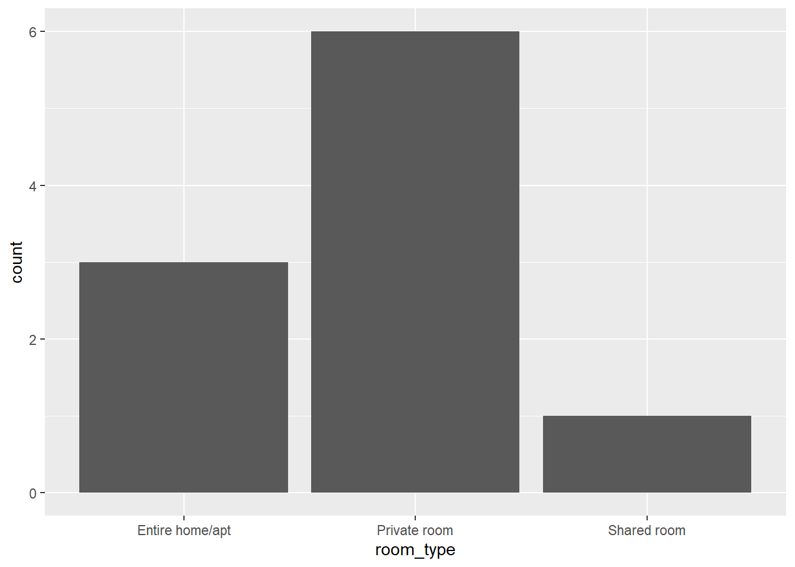
Argumentos que podemos agregar a la función geom_bar():
| Argumentos | Descripción |
|---|---|
width = |
Grosor de la barra. |
color = |
Color del borde del de los gráficos. |
fill = |
Color de interior del grafico |
Como podemos ver en el siguiente gráfico:
ggplot(data = airbnb, aes(x = room_type)) +
geom_bar(width = 0.5, color = "blue" ,fill = "white" )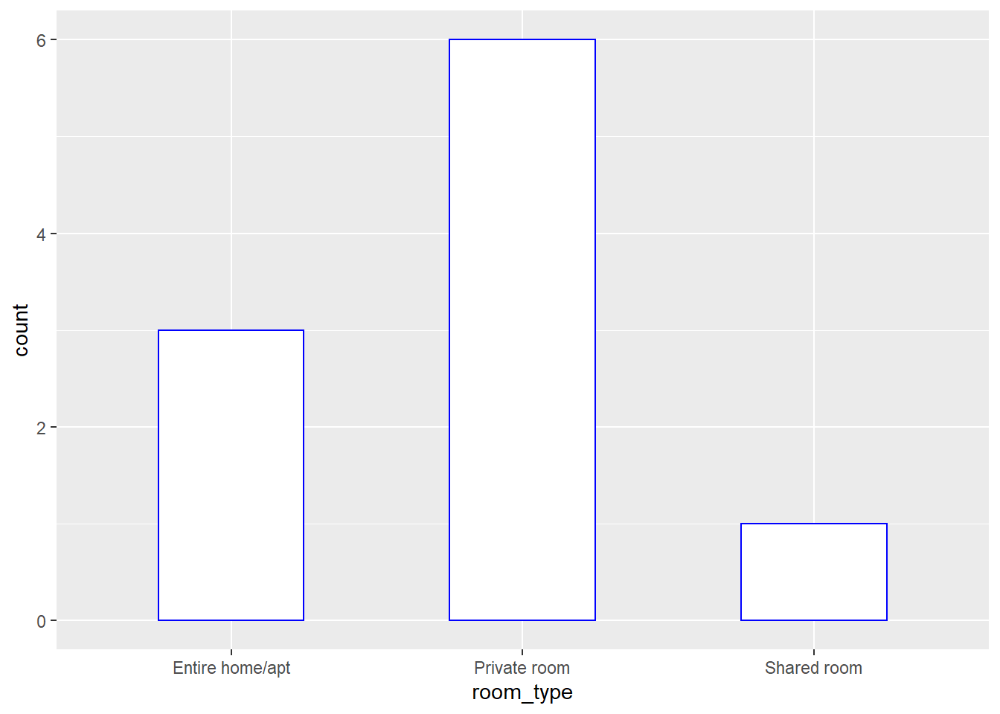
Algunas funciones complementarias que podemos utilizar :
| funciones | Descripción |
|---|---|
aes() |
Con esta función configura la variable categórica para el eje X, usa el numérico para el eje Y. |
geom_bar() |
Título del gráfico. |
ggtitle() |
Título del grafico |
xlab() |
Nombre de los ejes X . |
ylab() |
Nombre de los ejes Y . |
coord_flip() |
Cambiar la orientación de los ejes |
labs(fill = ) |
Para cambiar el título de la leyenda |
geom_text() |
Etiquetas en las barras |
Puedes ver los colores disponibles el siguiente link: http://www.stat.columbia.edu/~tzheng/files/Rcolor.pdf
ggplot(data = airbnb, aes(x = room_type)) +
geom_bar(width = 0.9, fill = "blue" ) +
ggtitle("Grafico de barra")+
xlab("Tipo de habitación") +
ylab("cantidad")+
coord_flip()+
labs(fill = "habitaciones" )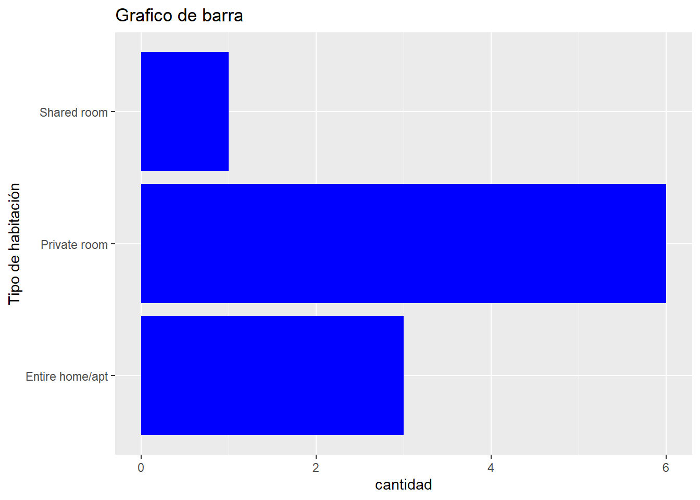
También podemos agregar etiquetas a los gráficos para ellos usamos la función geom_text(), y algunos de los argumentos de la función geom_text():
| Argumentos | Descripción |
|---|---|
vjust = |
La ubicación de la etiqueta marcando el término de la barra como referencia 0 |
size = |
Tamaño de la letra. |
color = |
Color de la letra |
4.5.1.1 Leyenda de la barra y color
Para agregar color a las barras usamos las siguientes funciones:
| Función | Descripción |
|---|---|
scale_color_manual () |
Para usar colores personalizados |
scale_color_brewer () |
Para usar paletas de colores del paquete RColorBrewer |
scale_color_grey () |
Para usar paletas de colores grises |
Además si agregamos el argumento fill = as.factor(room_type) en la función ggplot() agregamos una leyenda para habitaciones y para cambiar el nombre se usa la función labs(fill = "" ).
ggplot(data = airbnb, aes(x = room_type, fill = as.factor(room_type))) +
geom_bar(width = 0.9) +
scale_color_grey ()+
scale_fill_manual (values=c("#999999", "#E69F00", "#56B4E9"))+
ggtitle("Grafico de barra")+
xlab("Tipo de habitación") +
ylab("cantidad")+
labs(fill = "habitaciones" )
para cambiar la posición de la leyenda usamos la función theme(legend.position="") agregando un top para poner la leyenda en la parte superior y bottom en la parte inferior.
ggplot(data = airbnb, aes(x = room_type, fill = as.factor(room_type))) +
geom_bar(width = 0.9) +
scale_color_grey ()+
scale_fill_manual (values=c("#999999", "#E69F00", "#56B4E9"))+
ggtitle("Grafico de barra")+
xlab("Tipo de habitación") +
ylab("cantidad")+
labs(fill = "habitaciones" )+
theme(legend.position="bottom")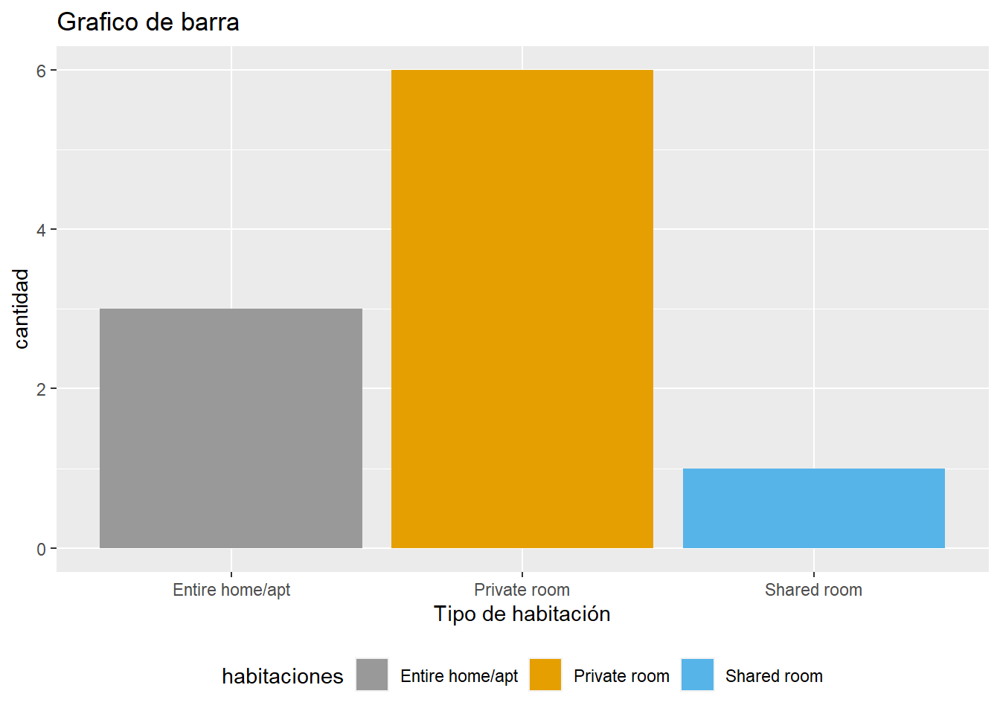
4.5.1.2 Con múltiples grupos
si queremos realizar gráficos con múltiples variable debemos agregar a la función aes() el argumento fill = en este caso usamos los distritos y además agregamos en la y = los precios de las habitaciones.
ggplot(data = airbnb, aes(x = room_type, y = price , fill = neighbourhood_group)) +
geom_bar(stat="identity") +
scale_color_grey ()+
scale_fill_manual (values=c("#999999", "#E69F00", "#56B4E9"))+
ggtitle("Grafico de barra")+
xlab("Tipo de habitación") +
ylab("precio")+
labs(fill = "habitaciones" )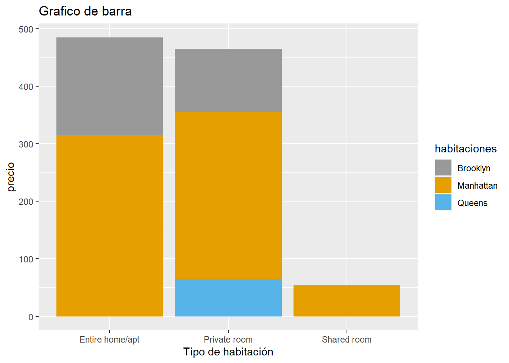
Ahora otra forma de realizar el mismo grafico anterior solo cambiando la posición de la barra es agregando en la función geom_bar() el argumento position=position_dodge() es de la siguiente manera:
ggplot(data = airbnb, aes(x = room_type, y = price , fill = neighbourhood_group)) +
geom_bar(stat="identity", position=position_dodge()) +
scale_color_grey ()+
scale_fill_manual (values=c("#999999", "#E69F00", "#56B4E9"))+
ggtitle("Grafico de barra")+
xlab("Tipo de habitación") +
ylab("precio")+
labs(fill = "habitaciones" )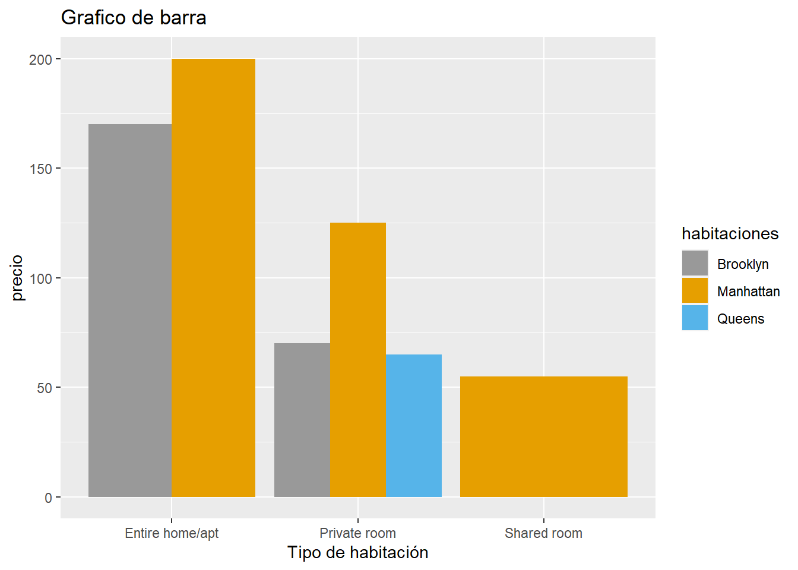
La función geom_errorbar() se puede utilizar para producir un gráfico de barras con barras de error.
4.5.2 Diagrama de caja con la función geom_boxplot ()
Boxplots o gráficos de caja, son útiles para visualizar la distribución de los datos de acuerdo con una variable o condición de interés.
Argumentos de la función geom_boxplot ():
| Argumentos | Descripción |
|---|---|
outlier.colour= |
Color del punto periférico. |
outlier.shape = |
Forma del punto periférico. |
outlier.size = |
Tamaño del punto periférico. |
notch=TRUE |
Forma de la caja |
fill= |
Color de la caja |
color= |
Color del borde de la caja |
ggplot(airbnb, aes( x = room_type, y = availability_365 )) +
geom_boxplot(outlier.colour="black", outlier.shape=16,
outlier.size=2, fill = "#E69F00", color= "black")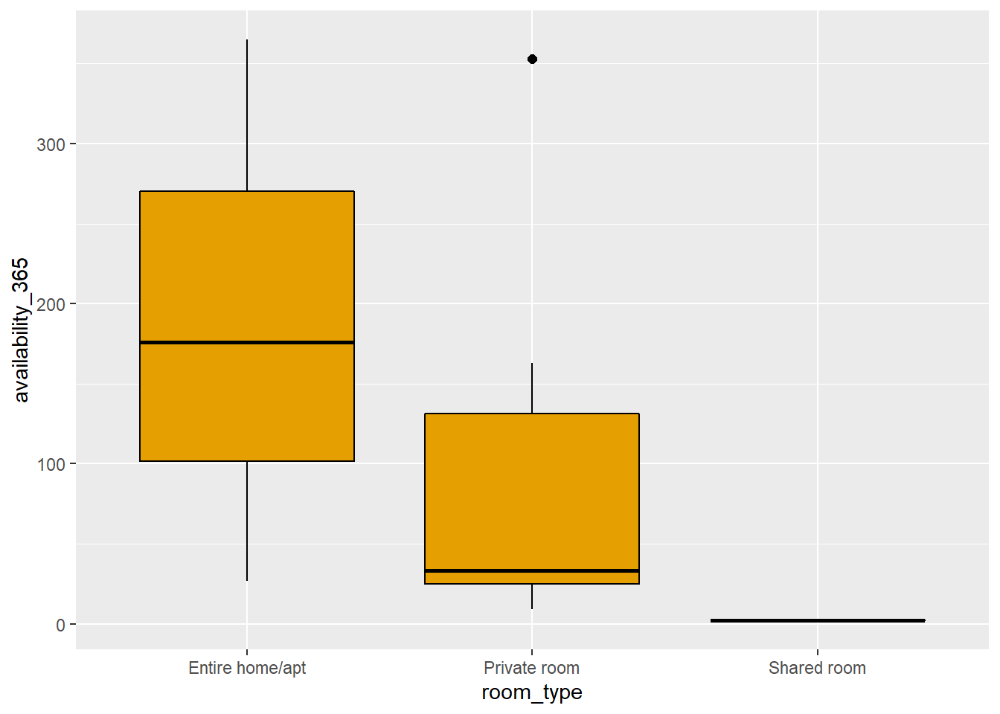
Algunas funciones complementarias que podemos utilizar:
| funciones | Descripción |
|---|---|
aes() |
Con esta función configura la variable categórica para el eje X, usa el numérico para el eje Y. |
geom_bar() |
Título del gráfico. |
ggtitle() |
Titulo del grafico |
xlab() |
Nombre de los ejes X . |
ylab() |
Nombre de los ejes Y . |
coord_flip() |
Cambiar la orientación de los ejes |
labs(fill = ) |
Para cambiar el título de la leyenda |
geom_text() |
Etiquetas en las barras |
La función stat_summary () se puede usar para agregar puntos medios a un diagrama de caja:
ggplot(airbnb, aes( x = room_type, y = availability_365 )) +
geom_boxplot(outlier.colour="black", outlier.shape=16, outlier.size=2) +
ggtitle("Grafico de barra")+
xlab("Tipo de habitación") +
ylab("precio")+
labs(fill = "habitaciones" )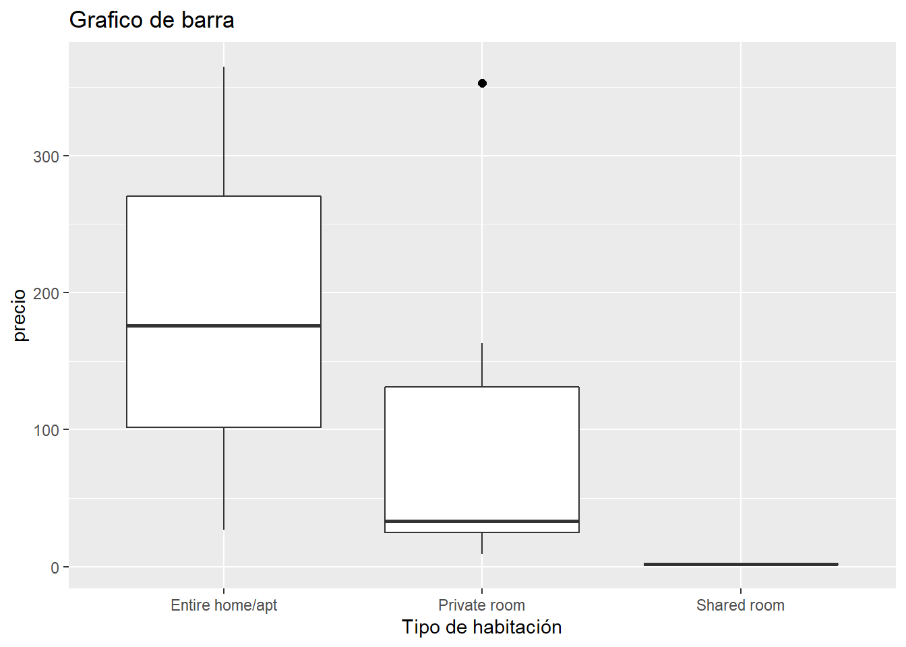
Si queremos agregar puntos usamos las funciones geom_dotplot () o geom_jitter () :
ggplot(airbnb, aes( x = room_type, y = availability_365 )) +
geom_boxplot(fill = "#E69F00", outlier.shape=16, outlier.size=2) +
ggtitle("Grafico de barra")+
xlab("Tipo de habitación") +
ylab("precio")+
labs(fill = "habitaciones" )+
geom_jitter(shape=16, position=position_jitter(0.2))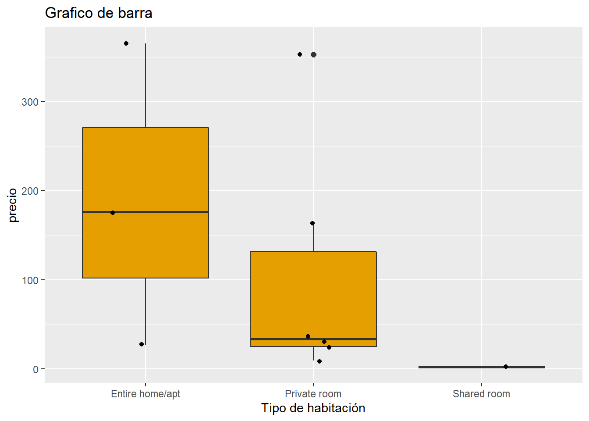
4.5.3 Gráficos de dispersión con la función geom_point ()
El diagrama de dispersión permite estudiar las relaciones entre dos conjuntos asociados de datos que aparecen en pares. Algunos
argumentos de la función geom_point ():
| Argumentos | Descripción |
|---|---|
size = |
Tamaño de fuente base, expresado en pts. |
shape = |
La forma del punto. |
colour = |
color del borde del punto |
fill = |
color del fondo del punto |
Para realizar el ejemplo anterior vamos a crear una nueva variable llamada ingreso:
airbnb <- airbnb %>% mutate(ingreso = price * 1,15 )ggplot(airbnb, aes( x = price, y = ingreso )) +
geom_point(size=2, shape=23)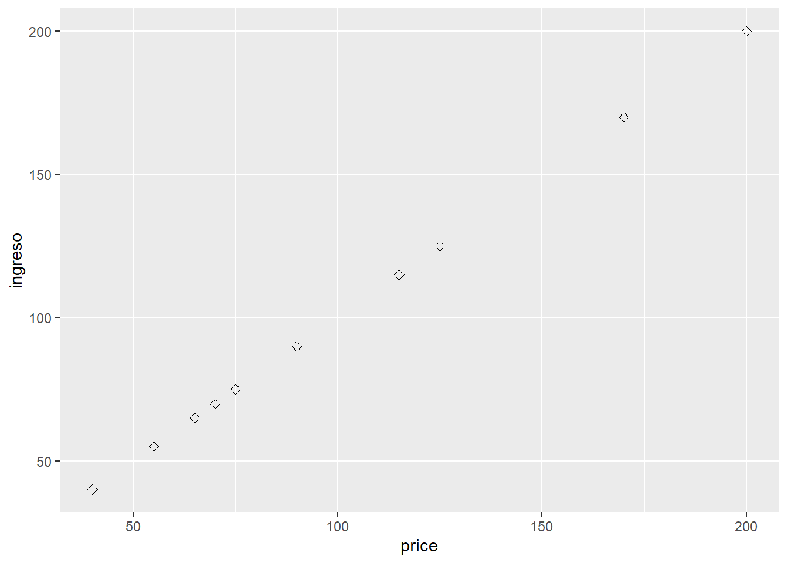
Para cambiar la forma del punto puedes elegir uno de los que se muestra en la siguiente imagen:
Figure 4.3: Forma del punto.
4.5.4 Temas de los gráficos
Como observamos en la Figure 4.2: Partes basicas de un gráfico en R. Para cambiar el tema de un grafico se usa función theme_(). a A continuación, veremos el ejemplo que utilizaremos para ilustrar los diferentes temas disponibles.
grafico <-ggplot(data = airbnb, aes(x = room_type, fill = as.factor(room_type))) +
geom_bar(width = 0.9) +
scale_color_grey ()+
scale_fill_manual (values=c("#999999", "#E69F00", "#56B4E9"))+
ggtitle("Grafico de barra")+
xlab("Tipo de habitación") +
ylab("cantidad")+
labs(fill = "habitaciones" )| Argumentos | Descripción |
|---|---|
base_size |
Tamaño de fuente base, expresado en pts. |
base_family |
Familia de fuentes base. |
base_line_size |
Tamaño base para elementos de línea |
base_rect_size |
Tamaño base para elementos rect |
En cuanto a las funciones que cambian el color del tema son los siguiente:
| funciones | Descripción |
|---|---|
theme_gray() |
Fondo gris y líneas de cuadrícula blancas. |
theme_bw() |
Fondo blanco y líneas de cuadrícula gris. |
theme_linedraw() |
Fondo blanco y líneas de cuadrícula negra. |
theme_light() |
fondo blanco y líneas de cuadrícula gris (mas intensa las líneas) |
theme_dark() |
Lo mismo que lo anterior pero con fondo negro. |
theme_minimal() |
Tema minimalista sin anotaciones de fondo . |
theme_classic() |
Un tema de aspecto clásico, con líneas de eje x e y,y sin líneas de cuadrícula |
theme_void() |
Un tema completamente vacío. |
theme_classic() |
Enmarca el grafico |
grafico + theme_gray()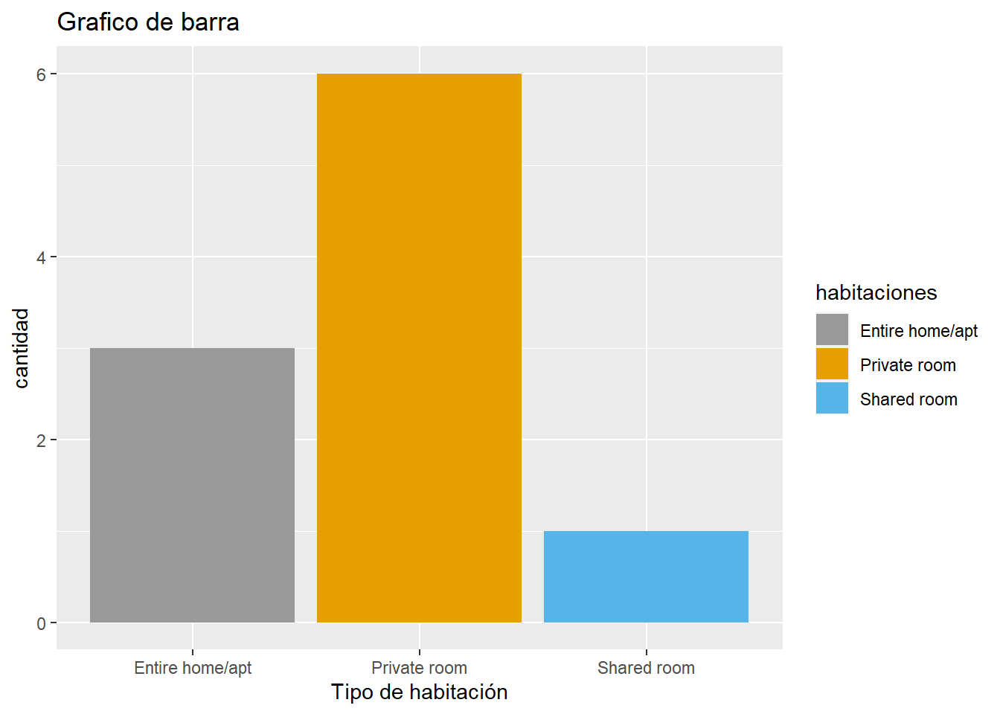
grafico + theme_bw()grafico + theme_linedraw()grafico + theme_light()grafico + theme_dark()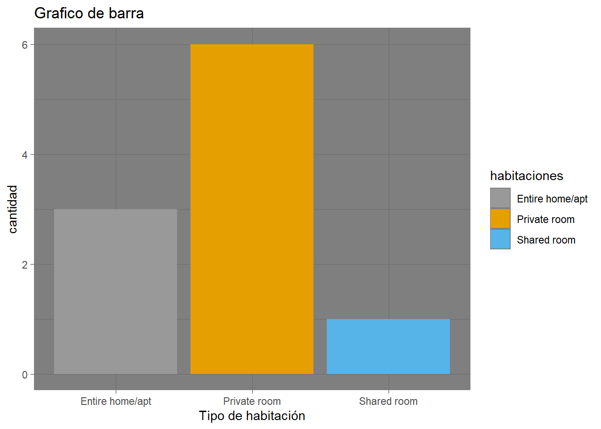
grafico + theme_minimal()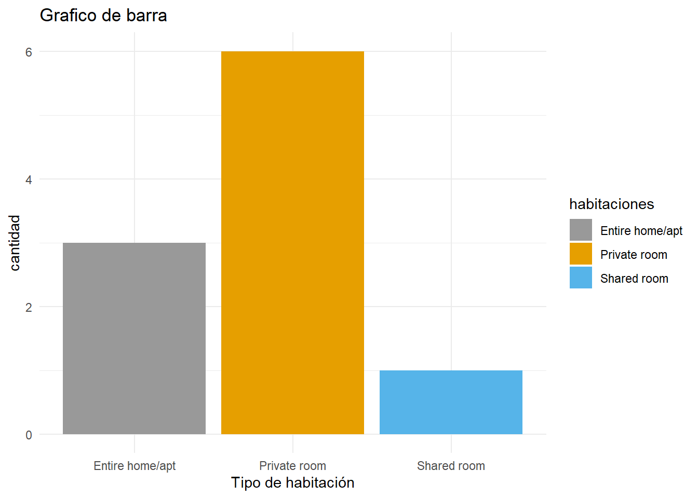
grafico + theme_classic()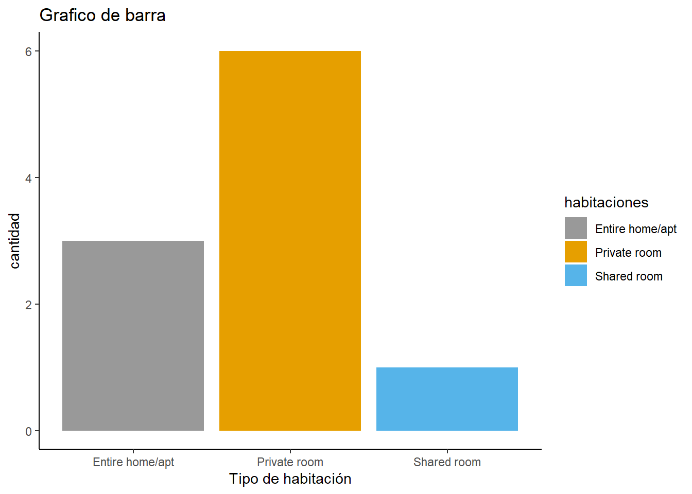
grafico + theme_void()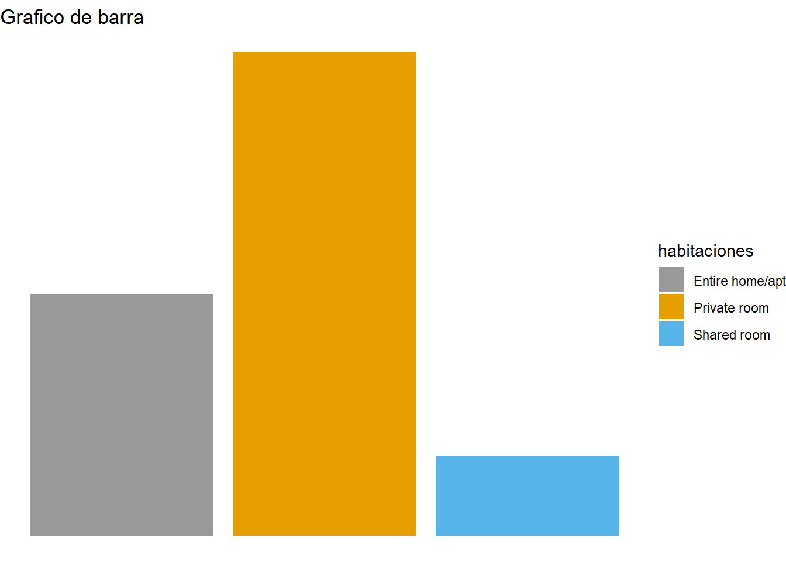
grafico + theme_test()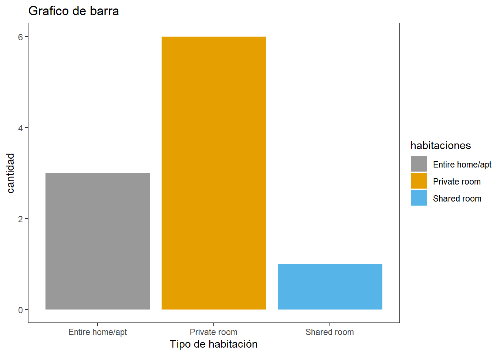
4.6 Otros packages relacionados.
4.6.1 Packages data.table
data.table es un paquete extremadamente rápido y eficiente en memoria para transformar datos en R. Funciona convirtiendo los objetos de marco de datos nativos de R en data.tables con una funcionalidad nueva y mejorada.
dt[i,j, by]
dt Toma data.table. i Subconjunto de filas usando. j Manipular columnas. by Agrupados según.
Ejemplo tenemos el data frame BaseA.
baseC <- baseA %>%
inner_join(baseB, by = "ID")Subconjunto de filas usando i
Subconjunto de filas basadas en números de fila.
baseC[1:3,]## ID A B
## 1 1 x1 y1
## 2 2 x2 y2
## 3 3 x3 y3Filas de subconjunto basadas en valores en una o más columnas.
baseC[ID>3,]## ID A B
## 4 4 x4 y4
## 5 5 x5 y5
## 6 6 x6 y6Manipular columnas con j Extraer columnas por número. Prefije los números de columna con “-” para eliminarlos.
baseC[,c(2)]## [1] "x1" "x2" "x3" "x4" "x5" "x6"extraer columnas por nombre.
baseC[,c("A")]## [1] "x1" "x2" "x3" "x4" "x5" "x6"4.6.1.1 Funciones para data.tables
baseA## ID A
## 1 1 x1
## 2 2 x2
## 3 3 x3
## 4 4 x4
## 5 2 x2
## 6 3 x3Extrae filas únicas según las columnas especificadas en “by.” Deje “por” para usar todas las columnas.
unique(baseA, by = c("ID")) ## ID A
## 1 1 x1
## 2 2 x2
## 3 3 x3
## 4 4 x44.6.1.2 Leer y escribir archivos
En el caso de importar datos se usa la función fread()
| TIPO | CODIGO | DESCRIPCIÓN |
|---|---|---|
| Importar | fread (" file.csv ") |
Lee datos de un archivo plano como .csv o .tsv en R |
| exportación | fwrite(dt, "file.csv") |
Escribe datos en un archivo plano desde R |
Para más información vea el siguiente enlace.
Cheatsheet: https://github.com/Rdatatable/data.table